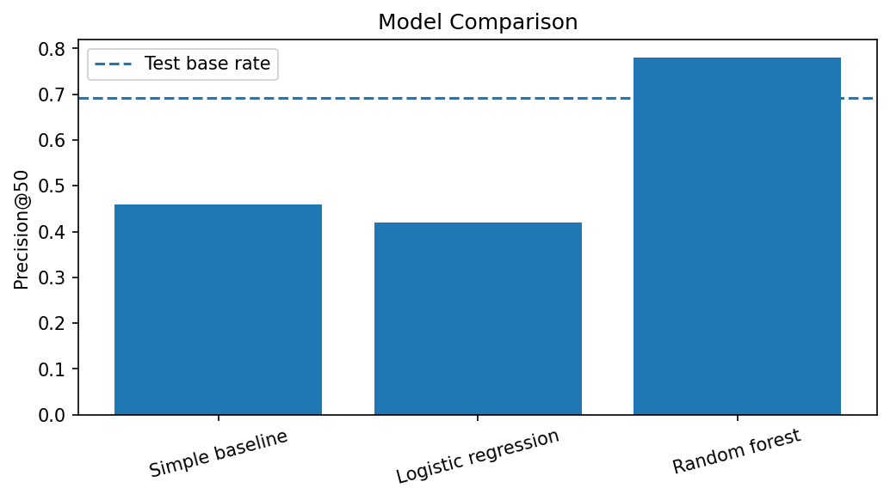
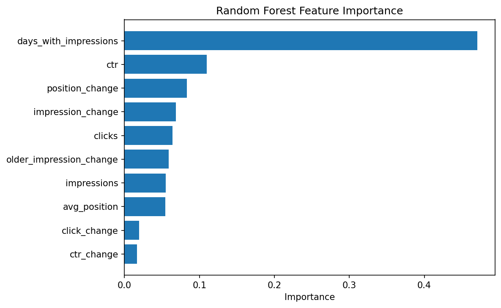
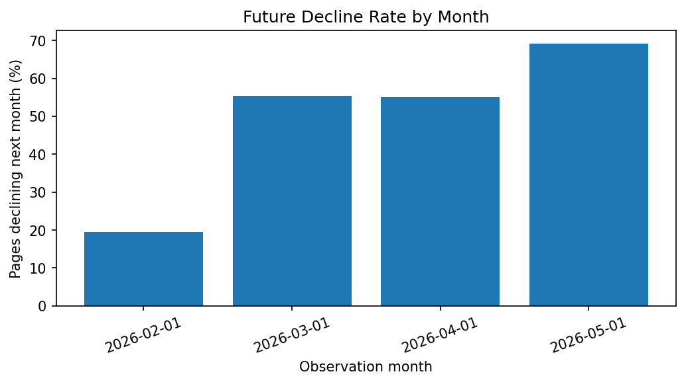

A page-level refresh opportunity scoring model using search performance data
This project looks at whether recent search performance can be used to prioritise content pages for refresh review. I used page-level data from the FlyRank ML Internship warehouse and created monthly observations so that recent performance could be compared with what happened in the following month. I compared a simple trend-based baseline with Logistic Regression and Random Forest using a time-based test period. The Random Forest performed best at the top of the ranking, with a Precision@50 of 78% compared with a 69.2% decline rate in the test set, although its ROC AUC was only 0.571. The final output is a ranked review queue with reason codes that can help editors decide which pages may be worth checking first.
The main goal of this project is to decide which content pages should be reviewed first for a possible refresh. Since it is not practical to manually check every page, the project uses recent search performance to rank pages by priority.
Each observation represents a content page in a particular month. The output is a ranked list with an opportunity score and reason codes showing why a page appears higher in the queue. The ranking is meant to help an editor decide where to look first rather than automatically deciding that a page needs to be changed.
A wrong recommendation mainly costs editorial time. A page that is not actually a strong refresh opportunity could be reviewed before another page where attention may have been more useful.
For the final project I used the FlyRank ML Internship warehouse, mainly the daily content performance table. I aggregated the daily data into monthly page-level observations and used data from December 2025 to June 2026.
After creating the history and future windows and applying the minimum-impression filter, the modelling dataset contained 291,517 observations from 43 clients and 105,697 content pages.
I only kept rows where Google Search Console data was available and removed pages with fewer than 100 impressions in the observation month because percentage changes can become unstable when the numbers are very small.
Client and content IDs were used only for grouping and joining and were not included as model features. Future outcome fields and label-derived fields were also excluded. No client names, domains, URLs or raw search queries are included in this paper.
I treated the task as a prediction and ranking problem. For each page, the model uses recent search performance to estimate whether the page will experience a meaningful decline in the following month.
I defined a future decline as a drop of at least 20% in impressions compared with the current month. This is only a proxy for pages that may be worth reviewing. It does not mean that every declining page needs a refresh.
The model used the following features:
The baseline assumes that pages already losing impressions are more likely to continue declining. Its score is based on recent negative impression change.
I compared this rule with Logistic Regression and Random Forest. Logistic Regression gives a simpler comparison, while Random Forest can capture more complicated relationships between the features.
I used a time-based split instead of randomly mixing observations. Earlier months were used for training, while May 2026 data was used to predict whether pages declined in June 2026.
The training set contained 203,633 observations and the final test set contained 87,884 observations. The training decline rate was 45.4%, while the decline rate in the final test period was 69.2%.
The models and baseline were compared using the same test period. Precision@50 was used as the main ranking metric because the practical goal is to identify a small number of pages to inspect first. ROC AUC is also reported to show overall ranking quality.
| Method | Precision@50 | ROC AUC |
|---|---|---|
| Test-set base rate | 69.2% | — |
| Simple baseline | 46.0% | 0.493 |
| Logistic Regression | 42.0% | 0.545 |
| Random Forest | 78.0% | 0.571 |

Figure 1. Precision@50 for the baseline and two models. The dotted line represents the test-set decline rate.
The Random Forest performed best for the main ranking metric. Of the 50 pages it ranked as highest risk, 78% experienced the defined decline in the following month.
However, its ROC AUC was only 0.571. This means the result is more useful for prioritising a small group of pages near the top of the queue than for accurately separating declining and non-declining pages across the full dataset.

Figure 2. Feature importance from the Random Forest model.
The Random Forest relied most heavily on days_with_impressions. CTR,
position change and recent impression change were also among the more important
variables.
I would be careful about treating days_with_impressions as a direct
search ranking signal. It may capture useful information about how consistently a
page appears in search, but it could also partly reflect differences in data
coverage or time periods.

Figure 3. Percentage of pages experiencing the defined decline in the following month.
The decline rate changed noticeably across the observation months. It was around 19.6% for February observations, around 55% for March and April, and 69.2% for May observations predicting June.
This suggests that the prediction problem was not equally distributed across time and is one reason the final model results should be interpreted cautiously.
There are several limitations to this analysis. First, the model predicts a future drop in impressions rather than directly predicting whether a page needs a refresh. A decline can happen for many reasons other than content quality.
Changes in search demand, competition, seasonality or search result layouts could affect impressions. The model also does not show that refreshing a page will improve its performance.
The later test period also had a much higher decline rate than the earlier training period. This suggests that the May-to-June period behaved differently from some of the earlier months.
Finally, the Random Forest's ROC AUC was relatively low. I therefore treat the model mainly as a way to prioritise a small review queue rather than as a strong classifier for every page.
I turned the Random Forest output into a final opportunity score. The score combines 70% model decline risk with 30% current search visibility. These weights were chosen as a simple prioritisation rule and were not learned by the model.
Pages near the top of the ranking are assigned higher review priority. I also add reason codes so an editor can understand why a page was moved higher in the queue.
| Priority | Suggested action | What to look for |
|---|---|---|
| 1 | Review first | High decline risk combined with meaningful search visibility. Check for outdated information, search-intent changes, ranking loss or other obvious content issues. |
| 2 | Review | Pages with some decline or opportunity signals, but less urgency than the highest-ranked group. |
| 3 | Monitor | Pages without enough evidence to justify immediate editorial attention. Continue watching performance before making major changes. |
Reason codes used in the queue include high visibility, recent impression drop, position worsened, low CTR, and recent recovery.
The main analysis is available in the project repository:
The main notebook is located at:
work/notebooks/capstone.ipynb.
The analysis was run in Python using DuckDB, pandas, NumPy, scikit-learn and matplotlib. A fixed random seed of 42 was used for the machine-learning models.
The warehouse is accessed with a Hugging Face read token stored as
HF_TOKEN in Colab Secrets. The token itself is not included in the
notebook or repository.
The main packages can be installed with:
pip install duckdb huggingface_hub pandas numpy scikit-learn matplotlib
Built on the FlyRank ML Internship dataset .